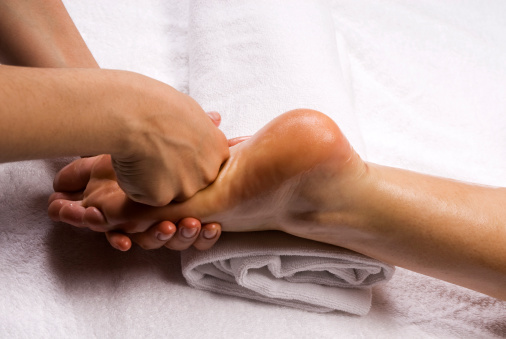

How to Choose the Best Foot Massager for Neuropathys
There are a variety of foot massagers. However, the most effective ones will provide the whole body massage and foot massage. The most effective foot massagers help to relax those muscles that are in your lower legs, feet along with your back. They can be used to aid in relaxation as well as a therapeutic instrument for injuries that are acute. There are a variety of types and functions that you can pick from. If you're in search of one you'll need to think about what you want to accomplish and the amount of pressure you'll require for an all-body massage.
There are foot massagers that come with 25 different modes of massage and the ability to vary intensity levels by 99 including electrodes that can be used for TENS. The therapy of TENS has been employed for centuries to treat many ailments, and is particularly beneficial for treating foot neuropathy. Although many weren't impressed by the technological capabilities of these devices, they have proven to be extremely beneficial and are rapidly becoming a sought-after luxury for people. They can be extremely affordable and provide the best in luxury. best foot massager for neuropathy
A foot massager is an investment worth it. The best models can provide various types of massages and can be a fantastic alternative to hiring for a massage therapist. A high-quality model will allow users to take pleasure in a variety of massages, and will aid in the elimination of neuropathy. It is also possible to select a model equipped with TENS therapy electrodes. This technology has been demonstrated to be extremely effective in treating various ailments that include foot neuropathy.
A foot massager is an excellent option to relax and alleviate back discomfort. Some models come with an on-board console, which lets you adjust the level of intensity you experience during your massage. Certain models have automated features that are ideal for those working in a hurry. Other models come with the ability to lock and have three different positions, so they can be used comfortably in any place. They're also sturdy and are covered by a manufacturer's warranty. You'll feel calmer and refreshed after using these.
If you're looking for the right foot massager, be sure that you choose one that is suitable for diabetics. A good foot massager won't harm your feet or assist with neuropathy. If you're in search of an foot massager specifically designed for diabetics you should select one that is adjustable in height and an integrated console that can be adjusted. The best one will include a foot massage function and will be able to meet the patient's requirements.

The foot massager you choose must be safe for use and not cause harm to your feet. It'll give deep, shiatsu and deep tissue massages to your feet. You can buy an foot massager with all of these functions. If you're unhappy with your purchase, make sure to inquire with the seller for warranty information. It could be worthwhile to experiment with the foot massager. You'll be grateful that you tried it!
A foot massager that isn't only efficient but also secure is crucial for diabetics. This Human Touch AcuCare Foot Massager has over 96 positive reviews and is safe for diabetics. It comes with either a closed or an open design that provides the appropriate amount of stimulation to those suffering from neuropathy. When you suffer from a stroke, you can choose between air pressure, shiatsu and oscillation. A foot massager that's efficient and safe can help you get the desired outcomes.
There are a variety of foot massagers that provide different kinds of massages. They include variations of shiatsu, kneading pressure and oscillation. Whatever type you pick, choose a device that is simple to use. It must have simple-to-use buttons and the proper level of comfort to your feet. Remember, a foot massager is only so good as its cost.
A uKnead the neuropathy foot massaging device is an extremely popular alternative for people suffering from neuropathy. It can ease back pain as well as reduce symptoms of Numbness. It's easy to use and comes with three different positions that provide the user with a relaxing massage. Additionally, it comes with an in-built console. The uKnead neuropathy foot massager has an onboard controller, as well as the ability to lock and roll. best foot massager for diabetics
The type of foot massager that you select is important but it's not the only factor. It is also important to consider what the intention behind the massager. Choose a model that can help treat your pain. A foot massager that resembles the shiatsu massage could assist in relieving muscle stiffness increase circulation, and affect the nervous system. There are a variety of types of foot pain. the best foot massager is going to be one that is suited to your requirements.